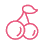
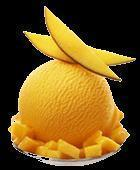

灭火逃生竞赛规则
本届机器人大赛主题为“灭火逃生”，是我校的第二届机器人大赛，旨在提高我校学生的动手能力，机械能力，编程能力以及思维能力，有利于提高我校学生综合素质，已经成为我校的传统比赛。

机器人
沈理第二届机器人大赛— 灭火逃生
竞赛规则
1.比赛时间为两分三十秒；
2.每支参赛队有1只机器人；
3.裁判吹哨示意开始比赛后，机器人在30秒内启动并离开出发区；
4.机器人必须从出发区出发；
5.机器人离开出发区后只有一次重启机会，再申请需要扣分；
6．若一方申请停止比赛，则需得到对方同意，并示意裁判后，才可终止比赛；
7.若有一支以上的队伍完成比赛所有要求，则得分多者获胜，其次用时短者获胜。
比赛场地和道具
1.比赛场地尺寸4800mm×4800mm，由表面涂油漆的胶合板制成，四周有围栏 ( 高100mm、厚20mm）。
2.场地的布局详见2016年“理工杯” 机器人大赛场地图。
⑴出发区分为蓝方、红方两个出发区；
出发区尺寸为400mm×400mm。
⑵灭火区分为红方灭火区三个，蓝方灭火区三个，共计六个灭火区；
灭火区尺寸为600mm×600mm。
⑶火焰距地面高度为：200±20mm，火焰本身最大长度为：50mm
关于机器人
每支参赛队必须自己设计和制作机器人参与比赛。每场比赛中，每支参赛队只允许有一台手动机器人。
1.机器人
⑴ 整个比赛过程中，机器人的尺寸不得超过400mm长×400mm宽×400mm高。
⑵ 机器人在比赛中不允许分离。
2.机器人操作
(1)每支参赛队只允许有1名队员操作机器人。
(2)自动机器人启动后，参赛队员不得接触机器人。
(3)出发前，机器人任何部分不能伸出出发区。
3.重新启动
重启按下列规定执行，一旦重启，重启的队需将本队机器人拿回出发区重新出发。
(1)机器人可以随时申请重启。经裁判允许后，参赛队员要将手动机器人搬回出发区重新启动；
4.能源
⑴ 机器人提供动力的电源不得超过DC12v；灭火装置的电源不得超多DC24V；
⑵ 如果用压缩空气，气压不得超过0.8MPa；
⑶ 不得使用竞赛委员会认为危险或不适当的能源/装置；
5.重量
机器人，包括电源、电缆、控制盒和机器人的其它零件在赛前必须称重。每支参赛队所有机器人的总重量不得超过10kg。

比赛完成
比赛持续时间
⒈比赛开始前，收到机器人准备信号后（若机器人未接到信号，则禁止将机器人搬至场地内），需要在30s时间内完成机器人的准备(若双方都完成准备并向裁判示意后，可以提前开始比赛)。
2.比赛采取一场定胜负的方式，每场比赛持续两分三十秒。

评审方式与扣分标准
⒈ 扣分
(1)裁判吹哨示意比赛开始前启动机器人即为抢跑，抢跑扣10分，而且一旦出现抢跑，抢跑的队必须把机器人搬回出发区，比赛必须重新开始；
(2)机器人30秒后未完全离开出发区（出发区存在机器人机身投影）扣10分；
(3)参赛队员未经允许进入场地扣20分;
(4)比赛过程中机器人有掉零件的现象，每块零件扣10分。
⒉ 判负
⑴ 机器人超过60秒未完全离开出发区（出发区存在机器人机身投影）；
⑵ 机器人离开赛道；
⒊ 取消比赛资格
⑴ 恶意破坏场地、设备或对方机器人；
⑵ 比赛开始后参赛队员未通过申请接触自己的机器人；
⑶ 参赛队机器人出现雷同（详见上文“（三）参赛对象与要求”），将取消比赛资格且取得的成绩作废；机器人超尺寸（详见上文“（三）机器人”中“机器人”；
⑷ 使用危险能源（详见上文“（三）机器人”中“4.能源”）；
⑸ 机器人超重（详见上文“（三）机器人”中“5.重量”）；
⑹ 机器人的轮子破坏或污染场地表面（禁止采用在轮子上涂胶粘剂、绑砂等可能损坏场地表面油漆的方法增大摩擦力）；
⑺ 恶意犯规或做出任何有悖公平竞争精神的动作；
注：若有改动请以《参赛手册》为准
奖项设置
比赛分为两个阶段，第一阶段为小组赛，小组赛为单循环赛，排名靠前的队伍出线（根据参赛队数量决定分几个组及每个组出线队伍的数量），出线的队伍参加下一阶段比赛；第二阶段为淘汰赛 。
学生奖项：
一等奖三名
二等奖五名
三等奖八名
注：若有改动以《参赛手册》为准
信息部：马忠臣


